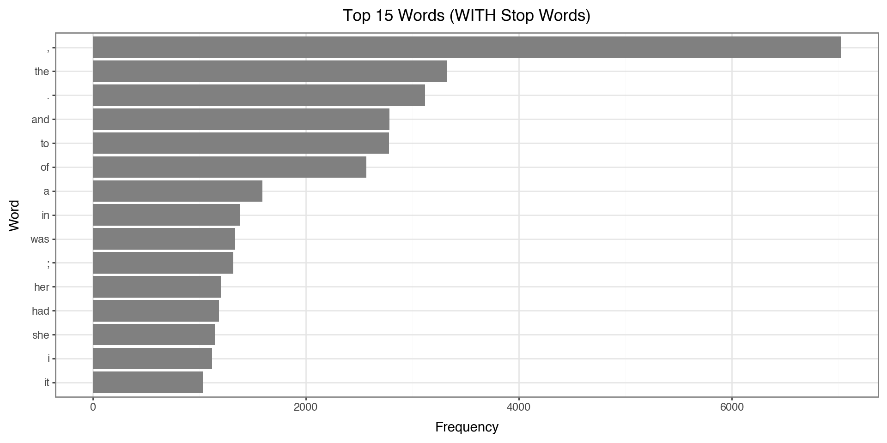
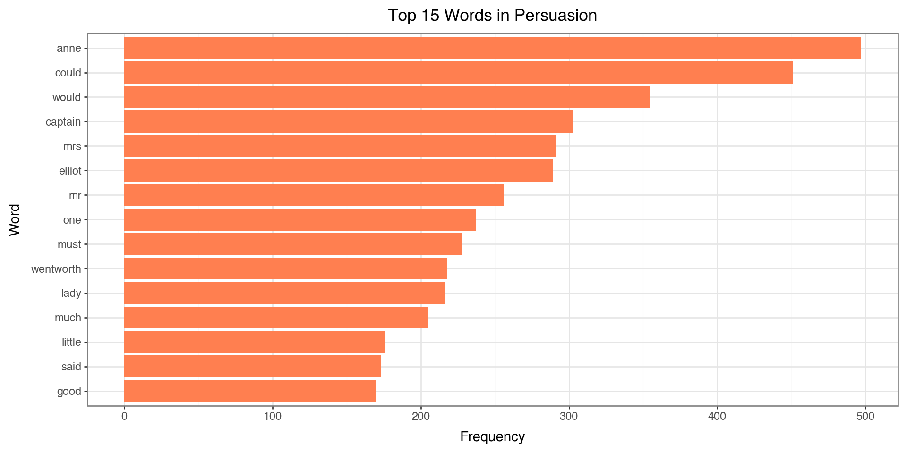
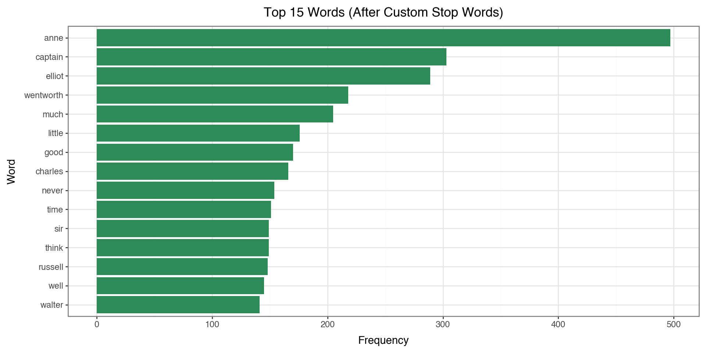
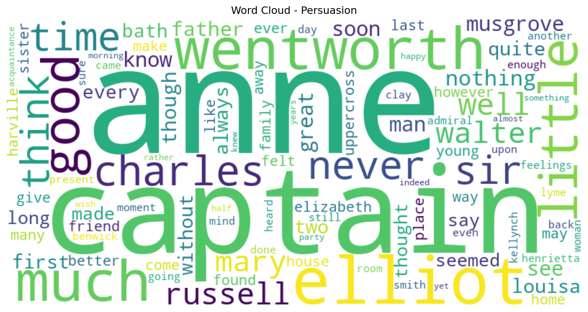
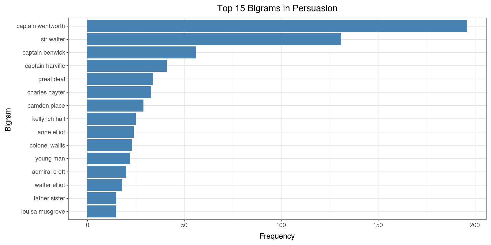
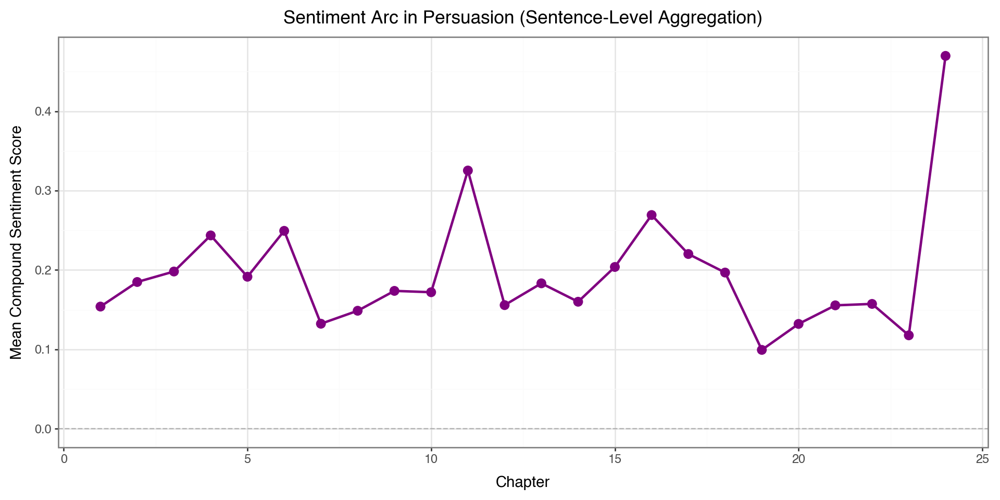
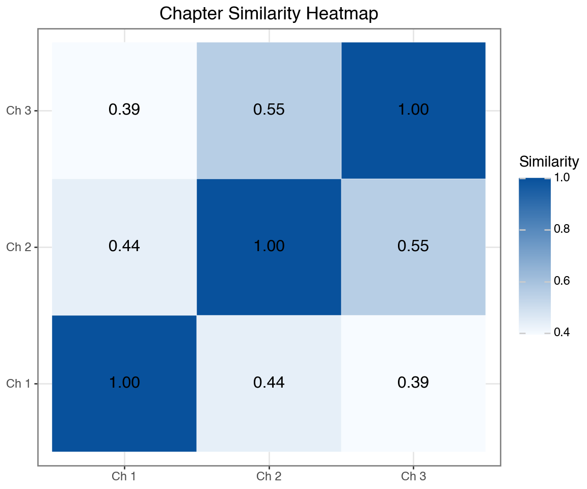
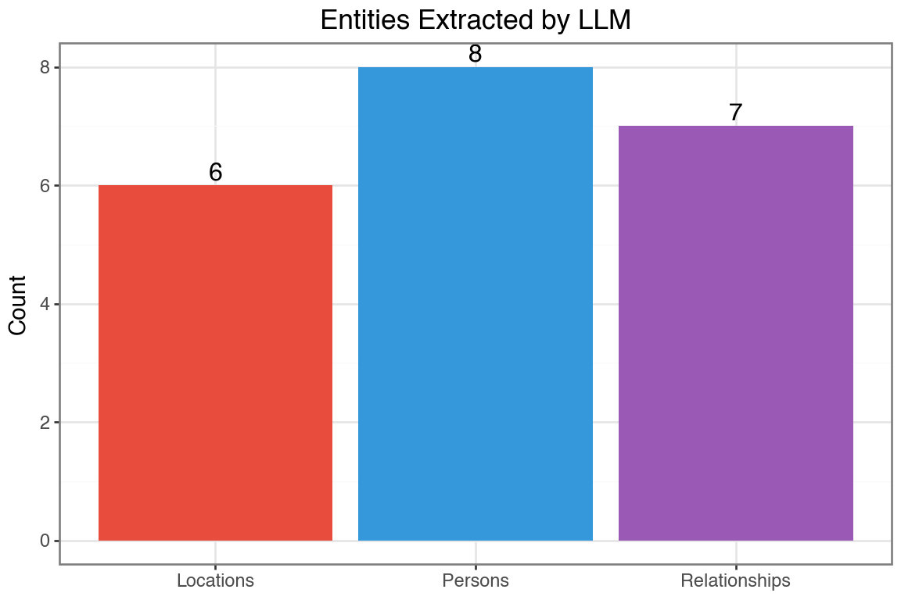
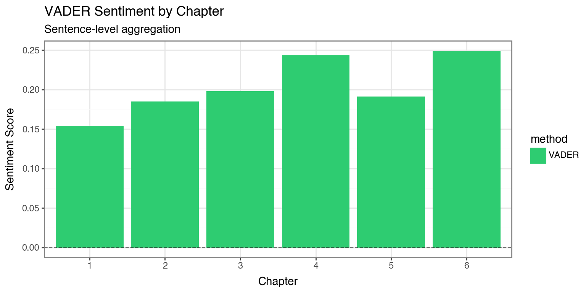

import pandas as pd
import numpy as np
import nltk
import re
from collections import Counter
nltk.download('punkt', quiet=True)
nltk.download('stopwords', quiet=True)
nltk.download('vader_lexicon', quiet=True)
nltk.download('punkt_tab', quiet=True)
from plotnine import *
import matplotlib.pyplot as plt JSC 370: Data Science II
Week 6: Text Mining & Large Language Models
What is NLP?
Natural Language Processing (NLP) is used for qualitative data that is collected using:
- Open-ended or free-form text from surveys
- Medical provider notes in electronic medical records (EMR)
- Transcripts of research participant interviews
- Social media posts, reviews, and other user-generated content
It is also called text mining.
What is NLP used for?
- Looking at frequencies of words and phrases in text
- Labeling relationships between words (subject, object, modification)
- Identifying entities in free text (person, location, organization)
- Coupled with AI/LLMs: text generation, summarization, classification, and more
Python NLP Ecosystem
Key Libraries:
- NLTK: Classic NLP toolkit with tokenizers, stemmers, taggers
- spaCy: NLP with pre-trained models
- scikit-learn: TF-IDF, topic modeling, text classification
- transformers (Hugging Face): State-of-the-art LLMs
- gensim: Topic modeling and word embeddings
Setup
Pride and Prejudice
We’ll use Jane Austen’s “Pride and Prejudice” from NLTK’s Gutenberg corpus.
Total characters: 466,292
First 500 characters:
[Persuasion by Jane Austen 1818]
Chapter 1
Sir Walter Elliot, of Kellynch Hall, in Somersetshire, was a man who,
for his own amusement, never took up any book but the Baronetage;
there he found occupation for an idle hour, and consolation in a
distressed one; there his faculties were roused into admiration and
respect, by contemplating the limited remnant of the earliest patents;
there any unwelcome sensations, arising from domestic affairs
changed naturally into pity and contempt as he turnPreparing the Text Data
- Split the text into chapters (Persuasion has chapters marked)
- Create a DataFrame
Number of chapters: 24| chapter | text | |
|---|---|---|
| 0 | 1 | Sir Walter Elliot, of Kellynch Hall, in Somers... |
| 1 | 2 | Mr Shepherd, a civil, cautious lawyer, who, wh... |
| 2 | 3 | "I must take leave to observe, Sir Walter," sa... |
| 3 | 4 | He was not Mr Wentworth, the former curate of ... |
| 4 | 5 | On the morning appointed for Admiral and Mrs C... |
Tokenization
Turning text into smaller units (tokens): individual words, numbers, or punctuation marks.
In English:
- Split by spaces (simple approach)
- More advanced algorithms handle contractions, punctuation
Why Tokenize?
Tokenization is the first step in most NLP pipelines because:
- Computers don’t understand sentences - they need discrete units to process
- Enables counting - we can count word frequencies, find patterns
- Allows filtering - remove stop words, punctuation, or rare words
- Prepares for modeling - tokens become features for machine learning
Tokenization with NLTK
NLTK’s word_tokenize() uses the Punkt tokenizer, which is trained on text to recognize:
- Word boundaries (not just spaces)
- Abbreviations (e.g., “Dr.”, “U.S.A.”)
- Contractions (e.g., “don’t” → “do” + “n’t”)
- Punctuation as separate tokens
Total tokens: 97,884
First 20 tokens: ['sir', 'walter', 'elliot', ',', 'of', 'kellynch', 'hall', ',', 'in', 'somersetshire', ',', 'was', 'a', 'man', 'who', ',', 'for', 'his', 'own', 'amusement']Tokenization: What Happened?
Notice in the output:
- Lowercase conversion: “The” becomes “the” (normalizes text)
- Punctuation separated: Periods, commas become their own tokens
- Contractions split: “didn’t” becomes “did” + “n’t”
This gives us a clean list of tokens ready for analysis.
spaCy: “Industrial-Strength” NLP
spaCy is a modern NLP library designed for production use (https://spacy.io/). Unlike NLTK (which is more educational), spaCy focuses on:
- Speed: Optimized for large-scale text processing
- Pre-trained models: Download models trained on large corpora
- Rich annotations: Tokenization + parts of speech (POS) tagging + named entity recognition (NER) + dependency parsing (relationships between words) in one pass
spaCy Models
spaCy uses pre-trained language models that you download:
| Model | Size | Features |
|---|---|---|
en_core_web_sm |
12 MB | Basic (POS, NER, parsing) |
en_core_web_md |
40 MB | + word vectors |
en_core_web_lg |
560 MB | + larger word vectors |
Install with: python -m spacy download en_core_web_sm
Tokenization with spaCy
When you call nlp(text), spaCy creates a Doc object containing Token objects. Each token has many attributes:
token.text- the original texttoken.pos_- part-of-speech tag (NOUN, VERB, ADJ, etc.)token.lemma_- base form (“running” → “run”)token.is_stop- is it a stop word?
SpaCy tokens with POS tags:
Sir -> PROPN
Walter -> PROPN
Elliot -> PROPN
, -> PUNCT
of -> ADP
Kellynch -> PROPN
Hall -> PROPN
, -> PUNCT
in -> ADP
Somersetshire -> PROPN
, -> PUNCT
was -> AUX
a -> DET
man -> NOUN
who -> PRONUnderstanding POS Tags
Part-of-Speech (POS) tags identify the grammatical role of each word:
| Tag | Meaning | Examples |
|---|---|---|
NOUN |
Noun | cat, house, idea |
VERB |
Verb | run, is, thinking |
ADJ |
Adjective | beautiful, quick |
ADV |
Adverb | quickly, very |
PROPN |
Proper noun | Elizabeth, London |
PUNCT |
Punctuation | . , ! ? |
DET |
Determiner | the, a, this |
POS tags help with tasks like finding all the people (PROPN) or actions (VERB) in text.
Named Entity Recognition (NER)
NER identifies and classifies named entities in text into predefined categories:
| Entity Type | Description | Examples |
|---|---|---|
PERSON |
People’s names | Elizabeth Bennet, Mr. Darcy |
ORG |
Organizations | Google, United Nations |
GPE |
Countries, cities, states | England, Toronto, California |
DATE |
Dates and periods | January 2024, the 1800s |
MONEY |
Monetary values | $100, fifty dollars |
WORK_OF_ART |
Titles of books, songs | Pride and Prejudice |
NER Example with spaCy
- Let’s show it on a sample of text
Named Entities:
Elizabeth Bennet -> PERSON
Hertfordshire -> GPE
England -> GPE
the early 1800s -> DATENER is useful for:
- Information extraction: Find all people/places mentioned
- Document classification: What topics does this text cover?
- Knowledge graphs: Build relationships between entities
Dependency Parsing
Dependency parsing analyzes the grammatical structure of a sentence by identifying relationships between words.
Each word is connected to a head word with a labeled relationship:
nsubj- nominal subject (“Elizabeth” is subject of “lived”)dobj- direct object (“book” in “I read the book”)prep- preposition (“in” connecting “lived” to “England”)amod- adjectival modifier (“red” in “red car”)
Dependency Parsing Example
Dependency Parse:
Elizabeth --nsubj --> gave
gave --ROOT --> gave
the --det --> letter
letter --dobj --> gave
to --dative --> gave
Mr. --compound --> Darcy
Darcy --pobj --> to
. --punct --> gaveWhy Dependency Parsing Matters
Dependency parsing helps understand meaning, not just words:
“The dog bit the man” vs “The man bit the dog”
- Same words, different subjects/objects!
Question answering: “Who gave the letter?” → Find the
nsubjof “gave”Relation extraction: Understand who did what to whom
Machine translation: Languages have different word orders
Working with Tokens as Data
Now that we have words as the unit of observation, we can use pandas for analysis. First we create a dataframe from the tokens.
Counting Tokens
| token | n | |
|---|---|---|
| 0 | , | 7024 |
| 1 | the | 3328 |
| 2 | . | 3118 |
| 3 | and | 2786 |
| 4 | to | 2782 |
| 5 | of | 2568 |
| 6 | a | 1592 |
| 7 | in | 1383 |
| 8 | was | 1337 |
| 9 | ; | 1319 |
| 10 | her | 1204 |
| 11 | had | 1186 |
| 12 | she | 1146 |
| 13 | i | 1122 |
| 14 | it | 1038 |
Stop Words
Words like “the”, “and”, “at” appear frequently but don’t add much context.
These are called stop words - they’re the “glue” of language but don’t carry meaning on their own.
Categories of stop words:
- Articles: a, an, the
- Pronouns: I, you, he, she, it, we, they
- Prepositions: in, on, at, to, from, with
- Conjunctions: and, but, or, if, because
- Auxiliary verbs: is, are, was, were, have, has
- Common adverbs: very, just, also, now
NLTK’s Stop Words List
NLTK provides curated stop word lists for multiple languages:
Available languages:
['albanian', 'arabic', 'azerbaijani', 'basque', 'belarusian', 'bengali', 'catalan', 'chinese', 'danish', 'dutch', 'english', 'finnish', 'french', 'german', 'greek', 'hebrew', 'hinglish', 'hungarian', 'indonesian', 'italian', 'kazakh', 'nepali', 'norwegian', 'portuguese', 'romanian', 'russian', 'slovene', 'spanish', 'swedish', 'tajik', 'tamil', 'turkish', 'uzbek']English Stop Words
- Let’s get and show the English stopwords
Number of English stop words: 198
All English stop words:
['a', 'about', 'above', 'after', 'again', 'against', 'ain', 'all', 'am', 'an', 'and', 'any', 'are', 'aren', "aren't", 'as', 'at', 'be', 'because', 'been', 'before', 'being', 'below', 'between', 'both', 'but', 'by', 'can', 'couldn', "couldn't", 'd', 'did', 'didn', "didn't", 'do', 'does', 'doesn', "doesn't", 'doing', 'don', "don't", 'down', 'during', 'each', 'few', 'for', 'from', 'further', 'had', 'hadn', "hadn't", 'has', 'hasn', "hasn't", 'have', 'haven', "haven't", 'having', 'he', "he'd", "he'll", "he's", 'her', 'here', 'hers', 'herself', 'him', 'himself', 'his', 'how', 'i', "i'd", "i'll", "i'm", "i've", 'if', 'in', 'into', 'is', 'isn', "isn't", 'it', "it'd", "it'll", "it's", 'its', 'itself', 'just', 'll', 'm', 'ma', 'me', 'mightn', "mightn't", 'more', 'most', 'mustn', "mustn't", 'my', 'myself', 'needn', "needn't", 'no', 'nor', 'not', 'now', 'o', 'of', 'off', 'on', 'once', 'only', 'or', 'other', 'our', 'ours', 'ourselves', 'out', 'over', 'own', 're', 's', 'same', 'shan', "shan't", 'she', "she'd", "she'll", "she's", 'should', "should've", 'shouldn', "shouldn't", 'so', 'some', 'such', 't', 'than', 'that', "that'll", 'the', 'their', 'theirs', 'them', 'themselves', 'then', 'there', 'these', 'they', "they'd", "they'll", "they're", "they've", 'this', 'those', 'through', 'to', 'too', 'under', 'until', 'up', 've', 'very', 'was', 'wasn', "wasn't", 'we', "we'd", "we'll", "we're", "we've", 'were', 'weren', "weren't", 'what', 'when', 'where', 'which', 'while', 'who', 'whom', 'why', 'will', 'with', 'won', "won't", 'wouldn', "wouldn't", 'y', 'you', "you'd", "you'll", "you're", "you've", 'your', 'yours', 'yourself', 'yourselves']Why Remove Stop Words?
Benefits:
- Reduces noise: Focus on meaningful content words
- Smaller vocabulary: Faster processing, less memory
- Better results: For tasks like topic modeling, keyword extraction
But be careful! Sometimes stop words matter:
- Sentiment: “not good” vs “good” (negation matters!)
- Phrases: “to be or not to be” loses meaning without stop words
- Search: “The Who” (band name) vs “who” (pronoun)
Top Words BEFORE Removing Stop Words
Let’s see what the top 15 words look like before we remove stop words:
top_before = token_counts.head(15).copy()
top_before['token'] = pd.Categorical(top_before['token'],
categories=top_before['token'][::-1])
(ggplot(top_before, aes(x='token', y='n'))
+ geom_col(fill='gray')
+ coord_flip()
+ labs(x='Word', y='Frequency',
title='Top 15 Words (WITH Stop Words)')
+ theme_bw()
)
Notice: The top words are all stop words like “the”, “to”, “and” - not very informative!
Removing Stop Words
We use a list comprehension to filter tokens. This is a concise way to create a new list by iterating through an existing one with conditions.
This reads as: “Give me each token t from tokens, but only if it passes both conditions.”
The Filtering Conditions
Our filter applies two conditions (both must be True):
| Condition | What it does | Why we need it |
|---|---|---|
t.isalpha() |
Checks if token contains only letters | Removes punctuation (., ,, !) and numbers (1, 2025) |
t not in stop_words |
Checks if token is NOT a stop word | Removes common words like “the”, “and”, “is” |
Example:
"the"→isalpha()= True, but it’s a stop word → Removed"."→isalpha()= False → Removed"elizabeth"→isalpha()= True, not a stop word → Kept
Removing Stop Words: The Code
- Filter out stop words and non-alphabetic tokens
- Look at the number before and after
filtered_tokens = [t for t in tokens
if t.isalpha() and t not in stop_words]
print(f"Before filtering: {len(tokens):,} tokens")
print(f"After filtering: {len(filtered_tokens):,} tokens")
print(f"Removed: {len(tokens) - len(filtered_tokens):,} tokens ({100*(len(tokens) - len(filtered_tokens))/len(tokens):.1f}%)")Before filtering: 97,884 tokens
After filtering: 37,741 tokens
Removed: 60,143 tokens (61.4%)Counting Filtered Tokens
Now we count word frequencies on the cleaned tokens:
| token | n | |
|---|---|---|
| 0 | anne | 497 |
| 1 | could | 451 |
| 2 | would | 355 |
| 3 | captain | 303 |
| 4 | mrs | 291 |
| 5 | elliot | 289 |
| 6 | mr | 256 |
| 7 | one | 237 |
| 8 | must | 228 |
| 9 | wentworth | 218 |
| 10 | lady | 216 |
| 11 | much | 205 |
| 12 | little | 176 |
| 13 | said | 173 |
| 14 | good | 170 |
Notice how the top words are now meaningful content words instead of “the”, “and”, “to”!
Visualizing Top Words
top_words = filtered_counts.head(15).copy()
top_words['token'] = pd.Categorical(top_words['token'],
categories=top_words['token'][::-1])
(ggplot(top_words, aes(x='token', y='n'))
+ geom_col(fill='coral')
+ coord_flip()
+ labs(x='Word', y='Frequency', title='Top 15 Words in Persuasion')
+ theme_bw()
)
Custom Stop Words
Sometimes we need to add domain-specific stop words:
# Add custom stop words
custom_stops = {'would', 'could', 'one', 'might', 'must',
'said', 'mr', 'mrs', 'miss', 'lady'}
all_stops = stop_words.union(custom_stops)
# Re-filter
filtered_tokens_v2 = [t for t in tokens
if t.isalpha() and t not in all_stops and len(t) > 2]
filtered_counts_v2 = pd.Series(filtered_tokens_v2).value_counts().head(15)
print(filtered_counts_v2)anne 497
captain 303
elliot 289
wentworth 218
much 205
little 176
good 170
charles 166
never 154
time 151
sir 149
think 149
russell 148
well 145
walter 141
Name: count, dtype: int64Top Words AFTER Custom Stop Words
Now let’s compare: with custom stop words removed, we get even more meaningful content:
# Prepare data for plotting
top_custom = filtered_counts_v2.reset_index()
top_custom.columns = ['token', 'n']
top_custom['token'] = pd.Categorical(top_custom['token'],
categories=top_custom['token'][::-1])
(ggplot(top_custom, aes(x='token', y='n'))
+ geom_col(fill='seagreen')
+ coord_flip()
+ labs(x='Word', y='Frequency',
title='Top 15 Words (After Custom Stop Words)')
+ theme_bw()
)
Compare to the previous plot: words like “would”, “could”, “said” are now removed!
Word Cloud
- This is a visualization that you often see to illustrate popular words
from wordcloud import WordCloud
# Create word frequency dictionary
word_freq = dict(pd.Series(filtered_tokens_v2).value_counts().head(100))
# Generate word cloud
wordcloud = WordCloud(width=800, height=400,
background_color='white',
colormap='viridis').generate_from_frequencies(word_freq)
plt.figure(figsize=(12, 6))
plt.imshow(wordcloud, interpolation='bilinear')
plt.axis('off')
plt.title('Word Cloud - Persuasion')
plt.show()
N-grams
N-grams are n consecutive words that appear together:
- Unigrams (n=1): “which”, “words”, “appear”
- Bigrams (n=2): “which words”, “words appear”
- Trigrams (n=3): “which words appear”
N-grams: Filtered or Unfiltered?
Should we remove stop words before computing n-grams?
| Approach | Pros | Cons |
|---|---|---|
| With stop words | Preserves phrases like “to be or not to be”, “the United States” | Dominated by uninteresting pairs like “of the”, “in a” |
| Without stop words | Focuses on meaningful content word pairs | May miss important phrases; words that weren’t adjacent become “adjacent” |
Our choice: We’ll use filtered tokens to focus on meaningful word pairs.
Extracting Bigrams
- Generate bigrams from filtered tokens (stop words removed)
Top 15 Bigrams (from filtered tokens):
captain wentworth 196
sir walter 131
captain benwick 56
captain harville 41
great deal 34
charles hayter 33
camden place 29
kellynch hall 25
anne elliot 24
colonel wallis 23
young man 22
admiral croft 20
walter elliot 18
father sister 15
louisa musgrove 15Note: These pairs weren’t necessarily adjacent in the original text - words between them may have been removed!
Visualizing Bigrams
bigram_df = pd.DataFrame(bigram_counts, columns=['bigram', 'count'])
bigram_df['bigram'] = bigram_df['bigram'].apply(lambda x: ' '.join(x))
bigram_df['bigram'] = pd.Categorical(bigram_df['bigram'],
categories=bigram_df['bigram'][::-1])
(ggplot(bigram_df, aes(x='bigram', y='count'))
+ geom_col(fill='steelblue')
+ coord_flip()
+ labs(x='Bigram', y='Frequency', title='Top 15 Bigrams in Persuasion')
+ theme_bw()
)
The Problem with Word Counts
Simple word frequency has a limitation: it treats all documents the same.
Consider analyzing chapters in a book:
- A word like “anne” might appear frequently in Chapter 5
- But if “anne” appears in every chapter, it’s not distinctive to Chapter 5
- We want to find words that are important to specific documents
Solution: TF-IDF weights words by how unique they are across documents.
Why Use TF-IDF?
Use cases:
- Document comparison: What makes each chapter/document unique?
- Search engines: Rank documents by relevance to a query
- Feature engineering: Convert text to numbers for machine learning
- Keyword extraction: Find the most distinctive terms
TF-IDF answers: “What words are important in THIS document compared to others?”
TF-IDF
Term Frequency (TF): How often a word appears in a document
\[TF = \frac{\text{Term count in document}}{\text{Total terms in document}}\]
Inverse Document Frequency (IDF): How rare a word is across documents
\[IDF = \log\left(\frac{\text{Total documents}}{\text{Documents containing term}}\right)\]
TF-IDF Combined
\[\text{TF-IDF} = TF \times IDF\]
- High TF-IDF: Important word in a specific document
- Low TF-IDF: Common word with less importance
TF-IDF with scikit-learn
from sklearn.feature_extraction.text import TfidfVectorizer
# Create TF-IDF matrix by chapter
vectorizer = TfidfVectorizer(stop_words='english', max_features=1000)
tfidf_matrix = vectorizer.fit_transform(text_df['text'])
# Get feature names
feature_names = vectorizer.get_feature_names_out()
print(f"Vocabulary size: {len(feature_names)}")Vocabulary size: 1000Top TF-IDF Words by Chapter
# Get top words for first 4 chapters
def get_top_tfidf(chapter_idx, n=5):
row = tfidf_matrix[chapter_idx].toarray().flatten()
top_indices = row.argsort()[-n:][::-1]
return [(feature_names[i], row[i]) for i in top_indices]
for i in range(min(4, len(text_df))):
print(f"\nChapter {i+1}:")
for word, score in get_top_tfidf(i):
print(f" {word:15} {score:.4f}")
Chapter 1:
walter 0.3480
elliot 0.2973
sir 0.2862
elizabeth 0.2420
father 0.1904
Chapter 2:
walter 0.3599
sir 0.3452
russell 0.2679
lady 0.2374
elizabeth 0.1778
Chapter 3:
shepherd 0.4495
sir 0.3372
walter 0.3164
admiral 0.2906
tenant 0.2748
Chapter 4:
anne 0.2410
russell 0.2358
lady 0.2090
engagement 0.2030
profession 0.1624Sentiment Analysis
Extracting opinions and emotions from text:
- Positive / Negative / Neutral classification
- Emotion categories: joy, anger, fear, sadness, etc.
- Intensity scores: How strongly positive or negative
VADER Sentiment Analysis
VADER (Valence Aware Dictionary and sEntiment Reasoner) is a lexicon-based sentiment analyzer designed for social media and general text.
How it works:
- Uses a dictionary of words with pre-assigned sentiment scores
- Handles negations (“not good” \(\rightarrow\) negative)
- Understands intensifiers (“very good” \(\rightarrow\) more positive)
- Recognizes punctuation and capitalization (“GREAT!!!” \(\rightarrow\) very positive)
VADER Output: Four Scores
VADER returns four scores for each text:
| Score | Range | Meaning |
|---|---|---|
neg |
0 to 1 | Proportion of text that is negative |
neu |
0 to 1 | Proportion of text that is neutral |
pos |
0 to 1 | Proportion of text that is positive |
compound |
-1 to +1 | Overall sentiment (normalized, weighted composite) |
The neg, neu, and pos scores sum to 1.0.
The Compound Score
The compound score is the most useful single metric:
- Computed by summing all word scores, adjusting for rules, then normalizing
- Ranges from -1 (extremely negative) to +1 (extremely positive)
Interpretation thresholds:
| Compound Score | Sentiment |
|---|---|
| >= 0.05 | Positive |
| <= -0.05 | Negative |
| Between -0.05 and 0.05 | Neutral |
VADER Example
Let’s see how VADER scores some sentences
from nltk.sentiment.vader import SentimentIntensityAnalyzer
sia = SentimentIntensityAnalyzer()
examples = [
"I love this book!",
"This is okay.",
"I hate this terrible weather.",
"The movie was not good.",
"The movie was not bad."
]
for text in examples:
scores = sia.polarity_scores(text)
print(f"{text:35} → compound: {scores['compound']:+.3f}")I love this book! → compound: +0.670
This is okay. → compound: +0.226
I hate this terrible weather. → compound: -0.778
The movie was not good. → compound: -0.341
The movie was not bad. → compound: +0.431The Problem with Long Texts
VADER is designed for short texts (tweets, reviews, sentences).
When analyzing entire chapters:
- The compound score tends to saturate at +1 or -1
- Long texts contain both positive and negative sentences
- The normalization doesn’t work well for thousands of words
Solution: Analyze at the sentence level, then aggregate per chapter.
Sentence Tokenization
NLTK’s sent_tokenize() splits text into sentences using:
- Punctuation patterns: Periods, question marks, exclamation points
- Abbreviation handling: Knows “Dr.” and “Mrs.” aren’t sentence endings
- Trained model: Uses the Punkt tokenizer trained on English text
Sentence-Level Sentiment Analysis
from nltk.tokenize import sent_tokenize
sentence_sentiments = []
for _, row in text_df.iterrows():
# Split chapter into individual sentences
sentences = sent_tokenize(row['text'])
# Score each sentence separately
for sent in sentences:
scores = sia.polarity_scores(sent)
scores['chapter'] = row['chapter']
sentence_sentiments.append(scores)
sentence_df = pd.DataFrame(sentence_sentiments)
print(f"Total sentences analyzed: {len(sentence_df):,}")
sentence_df.head()Total sentences analyzed: 3,654| neg | neu | pos | compound | chapter | |
|---|---|---|---|---|---|
| 0 | 0.167 | 0.671 | 0.162 | -0.1814 | 1 |
| 1 | 0.000 | 1.000 | 0.000 | 0.0000 | 1 |
| 2 | 0.000 | 1.000 | 0.000 | 0.0000 | 1 |
| 3 | 0.091 | 0.909 | 0.000 | -0.5574 | 1 |
| 4 | 0.000 | 0.917 | 0.083 | 0.6310 | 1 |
Aggregating by Chapter
Let’s calculate the mean sentiment score by chapter
| chapter | compound | pos | neg | neu | |
|---|---|---|---|---|---|
| 0 | 1 | 0.153892 | 0.108452 | 0.073082 | 0.818493 |
| 1 | 2 | 0.184853 | 0.113657 | 0.057000 | 0.829357 |
| 2 | 3 | 0.198065 | 0.136343 | 0.065210 | 0.798467 |
| 3 | 4 | 0.243536 | 0.148491 | 0.093891 | 0.757655 |
| 4 | 5 | 0.191471 | 0.126071 | 0.057893 | 0.816021 |
| 5 | 6 | 0.249289 | 0.137467 | 0.065346 | 0.797187 |
| 6 | 7 | 0.132271 | 0.109803 | 0.080230 | 0.809967 |
| 7 | 8 | 0.148624 | 0.139420 | 0.066337 | 0.794272 |
| 8 | 9 | 0.173656 | 0.113330 | 0.058816 | 0.827854 |
| 9 | 10 | 0.171978 | 0.131333 | 0.068109 | 0.800552 |
| 10 | 11 | 0.325292 | 0.129515 | 0.052197 | 0.818318 |
| 11 | 12 | 0.155733 | 0.112237 | 0.054796 | 0.832959 |
| 12 | 13 | 0.183183 | 0.131789 | 0.058342 | 0.809886 |
| 13 | 14 | 0.159982 | 0.115982 | 0.054366 | 0.829643 |
| 14 | 15 | 0.203798 | 0.124135 | 0.054173 | 0.821677 |
| 15 | 16 | 0.269217 | 0.147580 | 0.059790 | 0.792590 |
| 16 | 17 | 0.220112 | 0.139307 | 0.070679 | 0.790057 |
| 17 | 18 | 0.196745 | 0.123020 | 0.050412 | 0.826557 |
| 18 | 19 | 0.099329 | 0.075658 | 0.071623 | 0.852746 |
| 19 | 20 | 0.132032 | 0.121000 | 0.080577 | 0.798402 |
| 20 | 21 | 0.155444 | 0.120880 | 0.057540 | 0.821599 |
| 21 | 22 | 0.157241 | 0.131444 | 0.076787 | 0.791752 |
| 22 | 23 | 0.117682 | 0.119438 | 0.080959 | 0.799621 |
| 23 | 24 | 0.469696 | 0.197426 | 0.075468 | 0.727149 |
Now we have average sentiment per chapter based on all sentences!
Sentiment Across Chapters
(ggplot(chapter_sentiment, aes(x='chapter', y='compound'))
+ geom_line(color='purple', size=1)
+ geom_point(color='purple', size=3)
+ geom_hline(yintercept=0, linetype='dashed', color='gray', alpha=0.5)
+ labs(x='Chapter', y='Mean Compound Sentiment Score',
title='Sentiment Arc in Persuasion (Sentence-Level Aggregation)')
+ theme_bw()
+ theme(figure_size=(10, 5))
)
Topic Modeling
What is it? An unsupervised method to discover abstract “topics” in a collection of documents.
Use cases:
- Document organization: Automatically categorize articles, emails, reviews
- Content recommendation: Find similar documents based on topics
- Trend analysis: Track how topics change over time
- Exploratory analysis: Understand what a corpus is about
Latent Dirichlet Allocation (LDA)
The most popular topic modeling algorithm. Key assumptions:
- Each document is a mixture of topics
- Chapter 1 might be 60% “romance”, 30% “family”, 10% “society”
- Each topic is a mixture of words
- “Romance” topic: love, heart, feeling, affection, …
- “Family” topic: father, sister, mother, home, …
- Topics are latent (hidden) - we discover them from word patterns
How LDA Works
LDA is a generative model - it imagines how documents were created:
- For each document, randomly choose a topic mixture
- For each word position:
- Pick a topic based on the document’s mixture
- Pick a word based on that topic’s word distribution
In practice: LDA works backwards - given documents, it infers the topics that likely generated them.
The Document-Term Matrix
LDA needs a document-term matrix (DTM) as input:
| word1 | word2 | word3 | … | |
|---|---|---|---|---|
| Doc 1 | 3 | 0 | 5 | … |
| Doc 2 | 0 | 2 | 1 | … |
| Doc 3 | 1 | 4 | 0 | … |
- Rows = documents (chapters)
- Columns = words in vocabulary
- Values = word counts (or frequencies)
Creating the Document-Term Matrix
from sklearn.decomposition import LatentDirichletAllocation
from sklearn.feature_extraction.text import CountVectorizer
count_vec = CountVectorizer(stop_words='english', max_features=500)
dtm = count_vec.fit_transform(text_df['text'])
print(f"DTM shape: {dtm.shape}")
print(f" - {dtm.shape[0]} documents (chapters)")
print(f" - {dtm.shape[1]} unique words in vocabulary")DTM shape: (24, 500)
- 24 documents (chapters)
- 500 unique words in vocabularyChoosing the Number of Topics
The n_topics parameter is a hyperparameter you must choose:
| Few topics (2-3) | Many topics (10+) |
|---|---|
| Broad, general themes | Specific, narrow themes |
| Easier to interpret | May capture nuances |
| Topics may blend together | Topics may be redundant |
Tips:
- Start with a small number and increase if topics are too broad
- There’s no “correct” answer - it depends on your use case
- Use domain knowledge to evaluate if topics make sense
Fitting the LDA Model
Fit LDA model with 4 topics:
Visualizing Topics
- Create a DataFrame
- Create ordered factor for words within each topic
- Visualize
feature_names = count_vec.get_feature_names_out()
topic_data = []
for topic_idx, topic in enumerate(lda.components_):
top_words_idx = topic.argsort()[-10:][::-1]
for rank, idx in enumerate(top_words_idx):
topic_data.append({
'topic': f'Topic {topic_idx + 1}',
'word': feature_names[idx],
'weight': topic[idx],
'rank': rank
})
topic_df = pd.DataFrame(topic_data)
topic_df['word_ordered'] = pd.Categorical(
topic_df['word'],
categories=topic_df.sort_values(['topic', 'weight'])['word'].unique()
)
(ggplot(topic_df, aes(x='reorder(word, weight)', y='weight', fill='topic'))
+ geom_col(show_legend=False)
+ coord_flip()
+ facet_wrap('~topic', scales='free')
+ labs(x='', y='Weight', title='Top Words by Topic')
+ theme_bw()
+ theme(figure_size=(12, 8))
)
Large Language Models (LLMs)
What are LLMs?
Large Language Models are neural networks trained on massive text corpora that can:
- Generate coherent, contextual text
- Summarize documents
- Classify text into categories
- Answer questions about content
- Extract structured information
- Create embeddings for semantic search
LLM APIs
Popular LLM providers:
- Anthropic: Claude (claude-sonnet-4-20250514)
- OpenAI: GPT-5.2, GPT-4o-mini
- Google: Gemini
- Open Source: Llama, Mistral, DeepSeek
How LLM APIs Work
- Authentication: You get an API key from the provider
- Send a request: Your code sends text (a “prompt”) to the API
- LLM processes: The model generates a response
- Receive response: You get back generated text
Your Code $\rightarrow$ API Request $\rightarrow$ LLM Server $\rightarrow$ Response $\rightarrow$ Your Code
(prompt) (Claude) (generated text)Cost: You pay per token (roughly 1 token \(\approx\) 4 characters)
The Messages Format
LLM APIs use a messages structure - a list of conversation turns:
Each message has:
role: Who is speaking ("user"= you,"assistant"= the LLM)content: The text of the message
You can include multiple messages for multi-turn conversations.
Setting Up the Anthropic Client
We are going to show this with Claude, we need an API key
Setting Up the Anthropic Client
LLM for Text Summarization
The task: Give the LLM a long text and ask it to summarize.
Key parameters:
model: Which LLM to usemax_tokens: Maximum length of responsemessages: The conversation (our prompt)
LLM for Text Summarization
# Get the first chapter text (first 2000 chars for demo)
chapter1_text = text_df['text'].iloc[0][:2000]
# Call Claude to summarize
response = client.messages.create(
model="claude-sonnet-4-20250514",
max_tokens=150,
messages=[
{"role": "user", "content": f"Summarize this text in 2-3 sentences:\n\n{chapter1_text}"}
]
)
# Extract text from response object
summary = response.content[0].text
print("Chapter 1 Summary:")
print("-" * 40)
print(summary)Chapter 1 Summary:
----------------------------------------
Sir Walter Elliot of Kellynch Hall is a vain baronet who spends his time obsessively reading the Baronetage, a book of aristocratic genealogies, finding particular pleasure in reading about his own family's entry. The text reveals his family details: he was widowed in 1800 and has three daughters - Elizabeth, Anne, and Mary (who married Charles Musgrove in 1810). Sir Walter has personally annotated his family's entry in the book, adding details like his daughter's marriage and the exact date of his wife's death, showing his pride in his aristocratic lineage.Text Embeddings
What are embeddings? Numerical vectors that capture semantic meaning.
"The cat sat on the mat" → [0.23, -0.45, 0.12, ..., 0.67] (384 numbers)
"A kitten rested on a rug" → [0.21, -0.42, 0.15, ..., 0.65] (similar!)
"Stock prices rose today" → [-0.54, 0.33, -0.21, ..., 0.12] (different)Why? Similar meanings \(\rightarrow\) similar vectors \(\rightarrow\) can compute similarity!
Creating Embeddings
We use sentence-transformers, a library that runs locally (no API needed):
from sentence_transformers import SentenceTransformer
# load a pre-trained model (downloads once, then cached)
model = SentenceTransformer('all-MiniLM-L6-v2')
# embed first 3 chapters - each becomes a 384-dim vector
chapter_texts = text_df['text'][:3].tolist()
embeddings = model.encode(chapter_texts)
print(f"Embedded {len(embeddings)} chapters")
print(f"Each embedding has {len(embeddings[0])} dimensions")Embedded 3 chapters
Each embedding has 384 dimensionsWhat is Cosine Similarity?
Cosine similarity measures the angle between two vectors, not their magnitude.
\[\text{cosine similarity} = \frac{A \cdot B}{\|A\| \|B\|} = \frac{\sum_{i=1}^{n} A_i B_i}{\sqrt{\sum_{i=1}^{n} A_i^2} \sqrt{\sum_{i=1}^{n} B_i^2}}\]
| Value | Meaning |
|---|---|
| 1 | Identical direction (most similar) |
| 0 | Perpendicular (unrelated) |
| -1 | Opposite direction (most dissimilar) |
Why cosine? Document length doesn’t matter - a short and long document about the same topic will still be similar.
Semantic Similarity with Embeddings
Once you have embeddings, compute similarity with cosine similarity:
from sklearn.metrics.pairwise import cosine_similarity
# Calculate similarity between chapter embeddings
similarity_matrix = cosine_similarity(embeddings)
# Display as DataFrame
sim_df = pd.DataFrame(
similarity_matrix,
index=['Ch 1', 'Ch 2', 'Ch 3'],
columns=['Ch 1', 'Ch 2', 'Ch 3']
)
print("Chapter Similarity Matrix:")
print(sim_df.round(3))Chapter Similarity Matrix:
Ch 1 Ch 2 Ch 3
Ch 1 1.000 0.437 0.393
Ch 2 0.437 1.000 0.553
Ch 3 0.393 0.553 1.000Visualizing Chapter Similarity
sim_long = sim_df.reset_index().melt(
id_vars='index', var_name='Chapter_Y', value_name='Similarity'
)
sim_long.columns = ['Chapter_X', 'Chapter_Y', 'Similarity']
sim_long['label'] = sim_long['Similarity'].round(2)
(ggplot(sim_long, aes(x='Chapter_X', y='Chapter_Y', fill='Similarity'))
+ geom_tile(color='white')
+ geom_text(aes(label='label'), size=12, format_string='{:.2f}')
+ scale_fill_gradient(low='#f7fbff', high='#08519c')
+ labs(x='', y='', title='Chapter Similarity Heatmap')
+ theme_bw()
+ theme(figure_size=(6, 5))
)
Higher values (darker) = more similar content
LLM for Structured Extraction
Powerful capability: Ask LLMs to return structured data (JSON).
How it works:
- Give the LLM some text
- Ask it to extract specific information
- Request output in JSON format
- Parse the JSON in Python
This lets you convert unstructured text → structured data!
LLM for Named Entity Recognition
import json
import re
# Use a sample from Chapter 1
sample_text = text_df['text'].iloc[0][:1500]
# Ask Claude to extract entities and return as JSON
response = client.messages.create(
model="claude-sonnet-4-20250514",
max_tokens=500,
messages=[
{"role": "user", "content": f"""Extract named entities from this text.
Return ONLY valid JSON with keys: persons (list), locations (list), relationships (list).
Text: {sample_text}"""}
]
)
# Parse JSON from response (strip markdown code blocks if present)
text = response.content[0].text
text = re.sub(r'^```json\s*', '', text)
text = re.sub(r'\s*```$', '', text)
entities = json.loads(text)
print("Extracted Entities from Chapter 1:")
print("-" * 40)
for key, value in entities.items():
print(f"{key}: {value}")Extracted Entities from Chapter 1:
----------------------------------------
persons: ['Sir Walter Elliot', 'Walter Elliot', 'Elizabeth', 'James Stevenson', 'Anne', 'Mary', 'Charles', 'Charles Musgrove']
locations: ['Kellynch Hall', 'Somersetshire', 'South Park', 'Gloucester', 'Uppercross', 'Somerset']
relationships: ['Walter Elliot married Elizabeth', 'Elizabeth daughter of James Stevenson', 'Walter Elliot father of Elizabeth', 'Walter Elliot father of Anne', 'Walter Elliot father of Mary', 'Mary married Charles', 'Charles son of Charles Musgrove']Visualizing Extracted Entities
Let’s count the entites by type
entity_counts = pd.DataFrame({
'type': ['Persons', 'Locations', 'Relationships'],
'count': [
len(entities.get('persons', [])),
len(entities.get('locations', [])),
len(entities.get('relationships', []))
]
})
(ggplot(entity_counts, aes(x='type', y='count', fill='type'))
+ geom_col(show_legend=False)
+ geom_text(aes(label='count'), va='bottom', size=12)
+ scale_fill_manual(values=['#e74c3c', '#3498db', '#9b59b6'])
+ labs(x='', y='Count', title='Entities Extracted by LLM')
+ theme_bw()
+ theme(figure_size=(6, 4))
)
LLM vs VADER for Sentiment
| Feature | VADER | LLM |
|---|---|---|
| Speed | Very fast | Slower (API call) |
| Cost | Free | Pay per token |
| Context | Word-level | Understands context |
| Nuance | Limited | Can detect sarcasm, irony |
| Custom output | Fixed scores | Any structure you want |
When to use LLMs: Complex text, need explanations, custom categories
LLM for Sentiment Classification
# Analyze sentiment of a chapter excerpt
chapter_excerpt = text_df['text'].iloc[5][:2000] # Chapter 6
response = client.messages.create(
model="claude-sonnet-4-20250514",
max_tokens=300,
messages=[
{"role": "user", "content": f"""Analyze the sentiment and emotions in this text.
Return ONLY valid JSON with:
- overall_sentiment: positive/negative/neutral/mixed
- confidence: 0 to 1
- emotions: list of detected emotions
- brief_explanation: 1 sentence explaining your analysis
Text: {chapter_excerpt}"""}
]
)
# Parse JSON (strip markdown code blocks if present)
text = response.content[0].text
text = re.sub(r'^```json\s*', '', text)
text = re.sub(r'\s*```$', '', text)
sentiment = json.loads(text)
print("LLM Sentiment Analysis (Chapter 6):")
print("-" * 40)
for key, value in sentiment.items():
print(f"{key}: {value}")LLM Sentiment Analysis (Chapter 6):
----------------------------------------
overall_sentiment: mixed
confidence: 0.8
emotions: ['disappointment', 'resignation', 'loneliness', 'gratitude', 'melancholy']
brief_explanation: Anne experiences disappointment and loneliness from the lack of sympathy she receives at Uppercross, but finds some solace in gratitude for Lady Russell's friendship and philosophical acceptance of social differences.Comparing VADER vs LLM Sentiment
# Get VADER sentiment for first 6 chapters (already computed earlier)
vader_scores = chapter_sentiment.head(6)[['chapter', 'compound']].copy()
vader_scores['method'] = 'VADER'
vader_scores.columns = ['chapter', 'score', 'method']
# Create comparison data (using VADER scores for visualization)
# Note: LLM scores would require multiple API calls
comparison_df = vader_scores.copy()
(ggplot(comparison_df, aes(x='factor(chapter)', y='score', fill='method'))
+ geom_col()
+ geom_hline(yintercept=0, linetype='dashed', alpha=0.5)
+ scale_fill_manual(values=['#2ecc71'])
+ labs(x='Chapter', y='Sentiment Score',
title='VADER Sentiment by Chapter',
subtitle='Sentence-level aggregation')
+ theme_bw()
+ theme(figure_size=(8, 4))
)
Local LLMs with Hugging Face
Hugging face is an open-source platform that has a repository with 500,000+ pre-trained models including text models and image models. It is easy to use these models locally.
from transformers import pipeline
# Load a small sentiment model (runs locally)
classifier = pipeline("sentiment-analysis",
model="distilbert-base-uncased-finetuned-sst-2-english")
# Analyze sentences
sample_sentences = [
"The weather was absolutely delightful.",
"She felt a deep sense of disappointment.",
"The meeting was scheduled for Tuesday."
]
for sentence in sample_sentences:
result = classifier(sentence)[0]
print(f"{sentence}")
print(f" -> {result['label']}: {result['score']:.3f}\n")Combining Traditional NLP + LLMs
Best practices for text analysis:
- Preprocessing: Use traditional NLP for cleaning, tokenization
- Exploration: Word frequencies, n-grams, word clouds
- Statistical Analysis: TF-IDF, topic modeling
- Deep Understanding: LLMs for summarization, Q&A, classification
- Embeddings: Semantic search and clustering
Summary
| Technique | Use Case | Tool |
|---|---|---|
| Tokenization | Text preprocessing | NLTK, spaCy |
| Stop Words | Noise removal | NLTK, custom |
| TF-IDF | Important words | scikit-learn |
| Sentiment | Opinion mining | VADER, LLMs |
| Topic Modeling | Theme discovery | LDA, NMF |
| Embeddings | Semantic search | OpenAI, HuggingFace |
| LLM Generation | Summarization, Q&A | GPT, Claude |